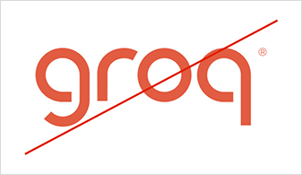

Triage Agent Output

llama-3.3-70b-versatile
via Groq API · response_format: json_object
{
"incident_type": "OOMKill",
"root_cause": "Memory limit 512Mi exceeded by llm-inference pod during batch request spike",
"confidence": 0.94,
"severity": "CRITICAL",
"recommended_action": "increase_memory_limit",
"runbook_match": "oomkill-increase-memory",
"requires_approval": true,
"estimated_resolution_min": 3
}
Rule-Based Fallback
If Groq unavailable, pattern-matching triage fires automatically. System never goes down.
9 Runbook Library
OOMKill, CrashLoop, PolicyViolation, CostSpike, DeploymentFailure — all matched automatically.
Demo Mode
DEMO_MODE=true runs the full pipeline without a real K8s cluster — judges can reproduce.
94% Confidence
High confidence triggers direct Maestro routing to remediation. Low confidence escalates to human.